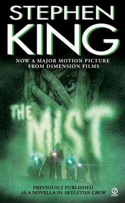

By Joe Orange
I read a lot of speculative fiction - novels, novellas, and short stories. There are real hidden gems out there that almost no one talks about, so I wanted to list some of my favourites here. These are the lesser-known ones, the ones that have stayed with me long after I put them down. If you are like me, maybe you will find something here you have not come across yet. Each one is a self-contained story where a small group of ordinary people have to deal with some kind of problem, and the writing is what makes it work.
Stephen King - Novel / TV Miniseries
A small island town off the coast of Maine. The worst blizzard in a hundred years is coming, and on the night it hits, a stranger appears on a doorstep asking for shelter. He has no ID, no memory - and he knows things about the town's residents no stranger should know. What he wants from them, they will have to decide together before the storm is over. This is King doing what he does best: a whole community under pressure, forced to solve a problem none of them are ready for.
Stephen King - Novella (Four Past Midnight) / TV Miniseries
Ten passengers wake from a red-eye flight to find most of the plane's seats empty. Their luggage is still there, their belongings are still there - but everyone else is gone. When they land, the world below is empty too: no people, no movement, no sound, and the sky is wrong. A small group of strangers have to figure out what has happened before whatever is coming catches up with them. One of the purest "small group, one mystery, one room" stories King has ever written.
Stephen King - Novella (Skeleton Crew)
A summer storm rolls in over a small Maine town, and when it clears, a thick mist has settled over the lake. Walking into the supermarket after the storm, David Drayton and his young son soon realize the mist is not empty. Trapped inside with a handful of strangers, a small group of ordinary people have to work out how to survive while everything outside the glass doors hunts them. The novella is a masterclass in group tension and an ending that stays with you.
